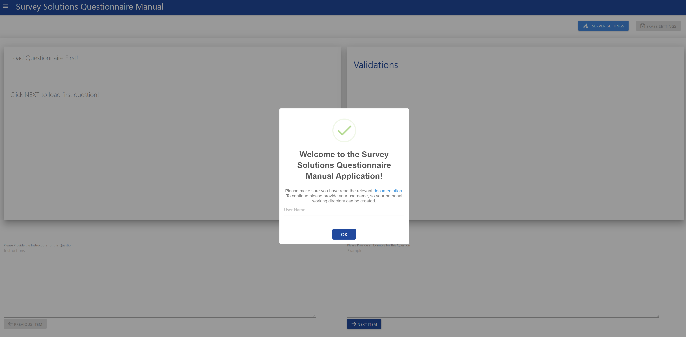
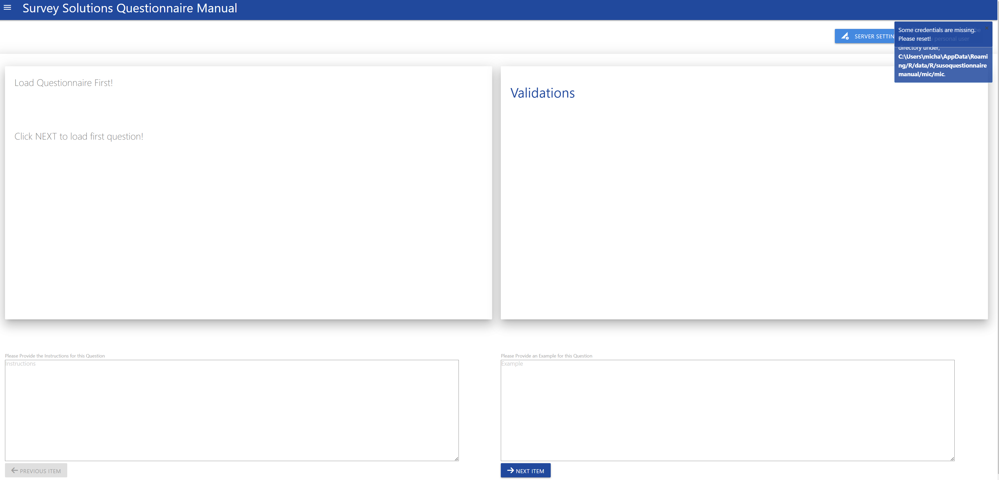
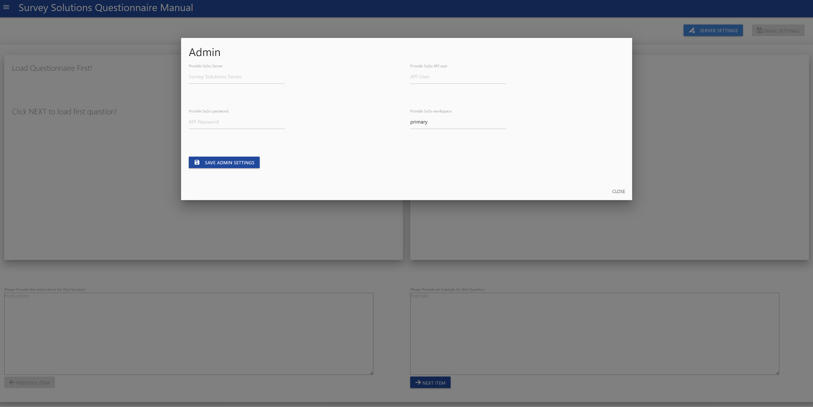
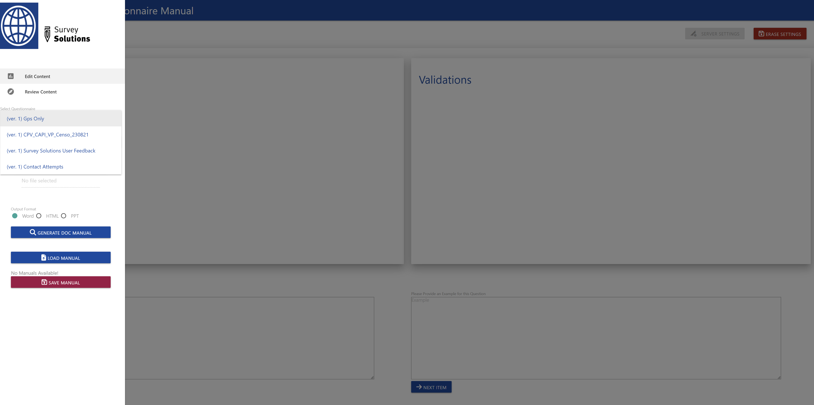
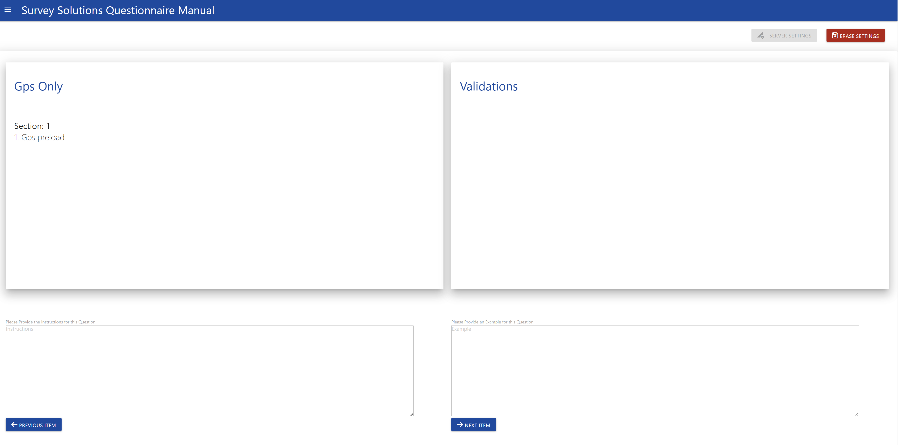
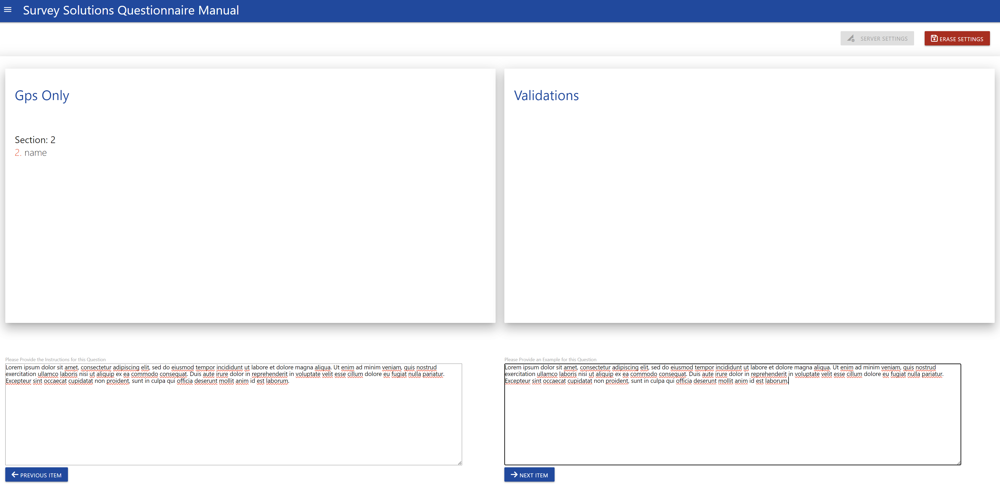
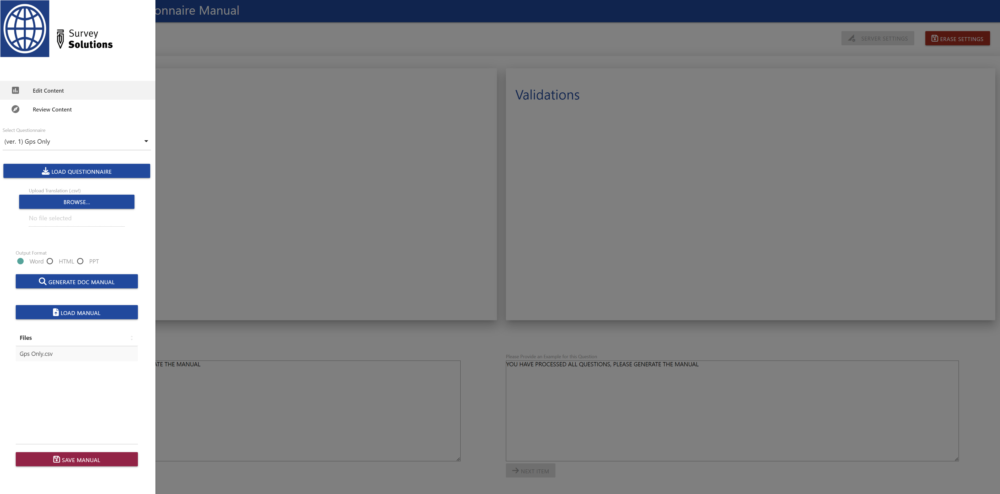
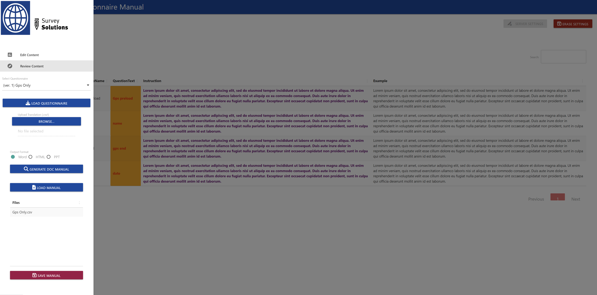
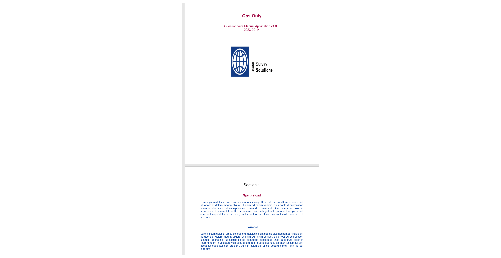
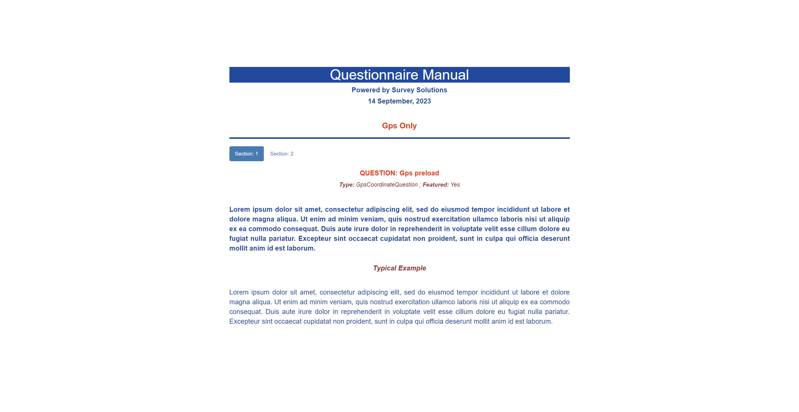

Using the Questionnaire Manual Application Interactively
appuse.RmdRunning the application
After successful installation of the susoquestionnairemanual package, you just need to run the following two commands to start the application:
library(susoquestionnairemanual)
runParaApp()This will start the application in your default browser.
Using the application
After running above commands, your browser will show the following start-up dialogue:

Provide you user name, so your personal working directory can be created on your system.This will store the admin as well as questionnaire/manual data. After providing the name, a notification in the tip right corner will tell you its full path. When ever you connect with this user, all prior data will be loaded into the application.

After that the system will check for any credentials in your working directory if none are present, then you have to provide them by clicking the Server Settings button in the upper right corner, which will open the following popup window:

Saving the credentials will start the credentials check, and if no error appears, your credentials will be stored and you can close the window. A further indicator for a successful connection is also the Erase Settings button in the upper right corner, which will only be active if valid credentials had been provided.
Selecting the questionnaire
Now you can select the questionnaire you want to work with. After selection click the Load Questionnaire button.

When the questionnaire is loaded, You will see its title in the main window. Click on Next Item to see the first question. In case you want to upload a translation you should ideally do it now.

Continue providing the relevant Instructions and Examples you want to include. In case there are validations attached to a question, it will also be shown on the screen, in the Validations box

After you reach the end of the questionnaire, the application will tell. You can now go to the review section and review all your inputs. This is also a good occasion to save the questionnaire manual inputs.
Saving the manual will display a table above the button Save Manual, with all your stored manuals.

After the review you can either continue making changes, or generate the manual in the available format, i.e HTML, PPTX, or DOC. If a translation was provided, then the manual will be in the language of the translation, otherwise the language used in your questionnaire.

Depending on your use case you can either choose a word document, which you may give to interviewers for the training:

A power point presentation which may also be useful for training purposes:
Or a html document, which can be embedded in a website or put on the interviewer tablet:

We hope this tool is useful! As always feedback is appreciated and welcome.